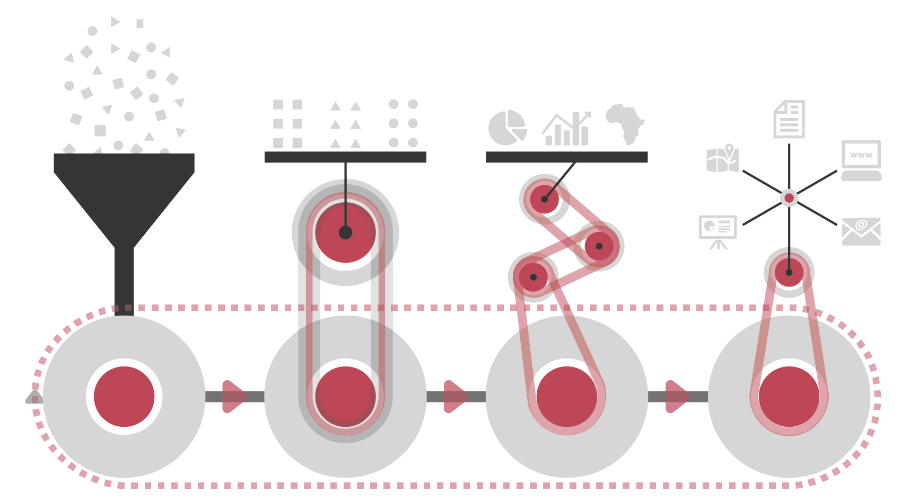
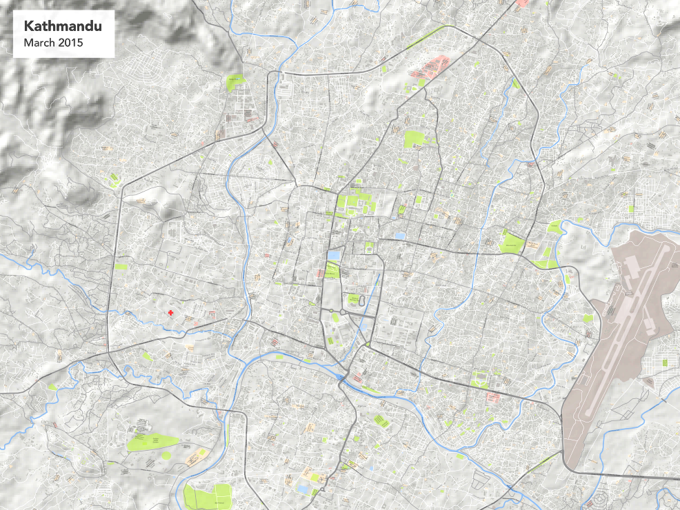
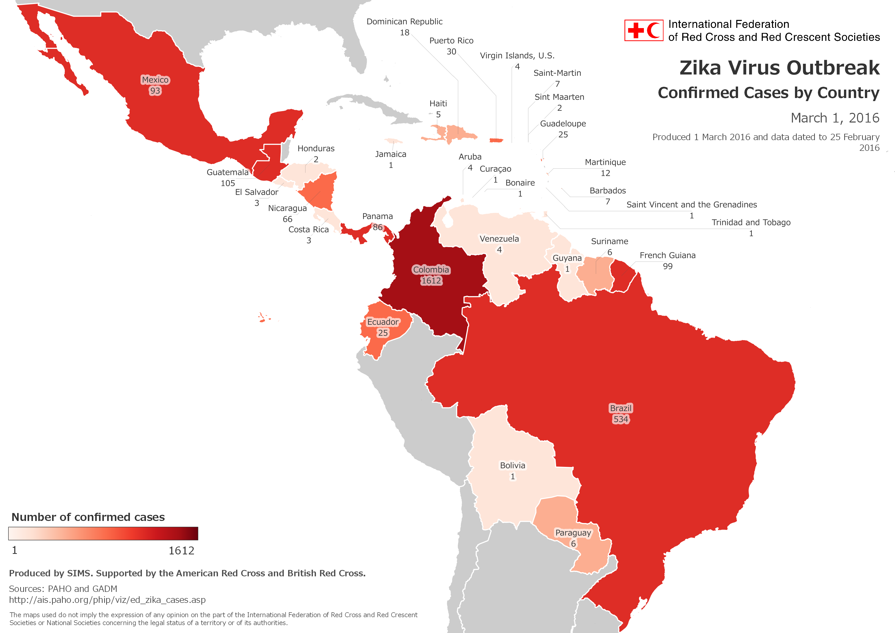
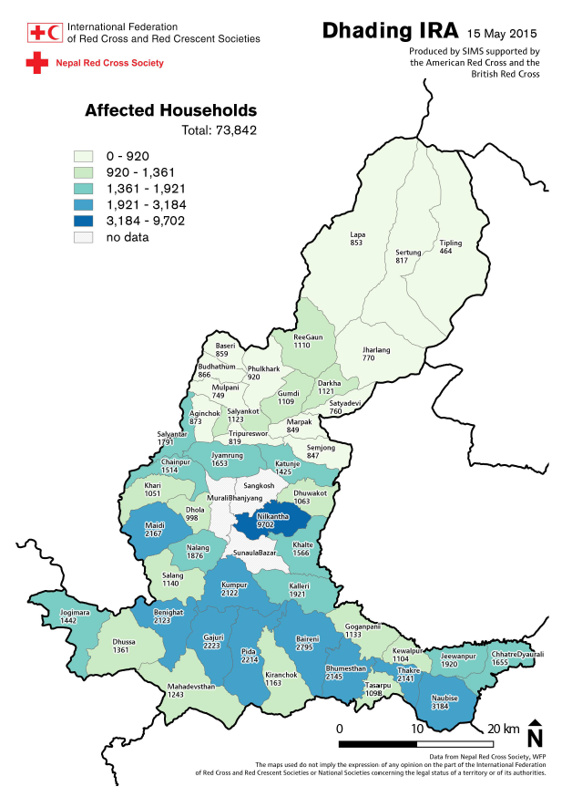

Product Cookbook
Products by SIMS. Supported by the American Red Cross and British Red Cross.
Press right on your keyboard or swipe right to navigate.
Click below to jump to a section
Press down on your keyboard or swipe down to navigate.
Last updated: March 2016
Surge Information Management Support (SIMS) is a network of information management and spatial data specialists that develop and implement information management for international disaster response operations across the Red Cross Red Crescent Movement.
SIMS aims to help operations leverage the power of mapping, information management and data visualization to support decision making and reporting.
SIMS has supported several disaster response operations but many response staff still do not have first hand experience with the products and services that can be provided. There is also not always an information management delegate deployed to the operation to guide engagement in-country. It can therefore be challenging for operations staff to know how to engage and make use of the support available.
The following guide aims to help operations managers and team leaders to be aware of the most common products, how they are helpful and the data needed for timely production.
The products included are not intended to be exhaustive but rather aim to facilitate effective engagement and act as a stimulus for new ideas.
The guide covers twelve of the most common products with a page per product and details the purpose alongside the data and time requirements. It also attempts to rate the ease of production versus resulting impact to aid in the prioritisation of requests.
It is important to note that the ease versus impact scale is only a rough guide as both can vary considerably for the same product between different response operations. Data can be readily available in one context, for example, and very hard to access in another.
It should also be mentioned that the production times listed are only relative indications. The amount of time required can depend on the size of the area in question, availability of the data and staff capacity at the time.

Basemaps are really useful for planning and logistics. They can add value in many different situations and printed versions can be drawn on and used for mocking out additional maps.
Basemaps are useful in all responses from small to large scale operations in any technical area.
Local geographical data: Sourced remotely
Often openly available although data from the field is sometimes more extensive and accurate.
Country boundaries: Sourced remotely
Usually widely available although sometimes governments will not release lower level administrative data.
Initial production: one day

Case maps are valuable for highlighting areas most in need during epidemic responses. If data is available, multiple maps can also be created to breakdown the geography by confirmed and suspected caseload.
Case maps are only useful in epidemic disaster responses but can add value at any scale.
Case data: Sourced remotely
Often provided by the Ministry of Health or WHO but spatial scale varies. Data from the field can help to supplement.
Country boundaries: Sourced remotely
Usually widely available although sometimes governments will not release lower level administrative data.
Initial production: one day
Updates: a few hours
Shakemaps are useful at the initial stages of earthquake responses to gauge probable impact. They are then often used as a base layer in subsequent maps and can also be combined with epicentre information.
Shakemaps are only applicable in earthquake responses and are most useful are the beginning of a response.
Earthquake data: Sourced remotely
Published for all major earthquakes by the US Geological Survey.
Country boundaries: Sourced remotely
Usually widely available although sometimes governments will not release lower level administrative data.
Initial production: one day
Typhoon track maps are useful for highlighting the more affected areas in hurricane responses. When combined with population, poverty level and windspeed, they can also be used to create a rough needs index before field assessments can be conducted.
Typhoon track data: Sourced remotely
Available from weather monitoring agencies and university groups.
Country boundaries: Sourced remotely
Usually widely available although sometimes governments will not release lower level administrative data.
Initial production: one day
Distribution maps are most useful for monitoring and reporting. They allow operations staff to keep track of distributions and communicate the quantity of goods distributed in different locations.
They are most useful in responses with significant distributions and the related reporting needs.
Distributions data: Sourced in the field
Focal point for maintaining such data varies between responses.
Country boundaries: Sourced remotely
Usually widely available although sometimes governments will not release lower level administrative data.
Initial production: one day
Updates: a few hours

Population affected maps are useful for identifying areas that are most in need. It can help inform decision making on locating teams, planning distributions and directing resources more generally.
They are most useful in medium to large responses with varying needs over a large geographical area.
Needs assessment: Sourced in the field
Needs assessments are generally conducted by the Government and coordinated by FACT. Combining with population statistics can also be useful.
Country boundaries: Sourced remotely
Usually widely available although sometimes governments will not release lower level administrative data.
Initial production: two days

The 3W map is particularly useful for coordination and donor awareness. It helps responders to see who is doing what in which locations and can inform decisions about where to mobilise additional resources.
It is most useful in medium to large multilateral responses.
3W database: Sourced in the field
Template for constructing the database can be found in the FACT toolkit under Coordination (D1).
Country boundaries: Sourced remotely
Usually widely available although sometimes governments will not release lower level administrative data.
Map production: two days
Updates: one day
Gap analysis is a numerical comparison of overall need against existing response activities. It is extremely useful for highlighting remaining gaps and helping decisions around directing remaining resources.
Gap analysis is most useful at a granular level but can be helpful in all types of response.
Needs assessment: Sourced in the field
Needs assessments are generally conducted by the Government and coordinated by FACT.
3W or distribution data: Sourced in the field
Depending on the nature of the response, either 3W or distribution data will provide the information for existing response activities.
Analysis: two days
Visualisation: one day
Health information dashboards assist in monitoring and reporting on the activities of field health teams. They also enable inference on population needs based on patient information.
They are useful in health emergencies at all scales and have worked particularly well for ERUs.
Health data: Sourced in the field
Often collected using mobile data collection tools such as MagPi and fed into the dashboard on a regular basis.
Country boundaries: Sourced remotely
Usually widely available although sometimes governments will not release lower level data.
Initial production: two days
Updates: a few hours
Indicator dashboards are most useful for coordination and reporting. They enable communication and interrogation of key indicators and encourage consistent data management.
They are most useful in pan-regional and cross-country responses with added coordination needs.
Indicators: Sourced in the field
Response indicators need to be agreed by all parties and updated on a regular basis. Often they address funding levels, activities and situation statistics.
Country boundaries: Sourced remotely
Usually widely available although sometimes governments will not release lower level data.
Initial production: two days
Updates: a few hours

Secondary data collection gives value by filling in critical data gaps. It is most appropriate for collecting data on existing points of interest such as health centres, refugee camps or security incidents.
It can be useful in any type of response but is often most valuable in protracted or silent disasters.
Sourced in the field
Only requirement for secondary data collection is a viable question.
We have successfully undertaken secondary data collection for the location of refugee camps, the nature and location of security incidents, and the status and operating organisation of Ebola Treatment Centres.
TimeInitial research: three days
Updates: a few hours (frequency varies)

OpenStreetMap Data Collection adds value by filling in the basemap for unmapped areas. It is useful in a many situations but is most valuable in remote or underdeveloped areas that are often poorly mapped.
It can be useful for any response and all current tasks are available here: http://tasks.hotosm.org/
Area of interest: Sourced in the field
Required to set bounding box for the crowdsourced mapping task. Often useful to know data of interest as well, such as mapping only roads or roads and residential areas.
Initial setup: a few hours
Mapping: five days (varies with scale)
SIMS is keen to provide support that is as operationally useful as possible meaning common products alone are not usually sufficient for context specific operations.
It is not possible to list every specific question and bespoke product that has been produced for each operation in the past but below contains a selection with brief explanation to try and illustrate the breadth of possibility.
Created to help with logistics and in-country travel across Kenema, Sierra Leone during the Ebola Outbreak. It shows roads with condition and distances between towns.
Requested to show status of different country borders which have changed in response to the population movement as well as the main migrant routes into and across Europe.